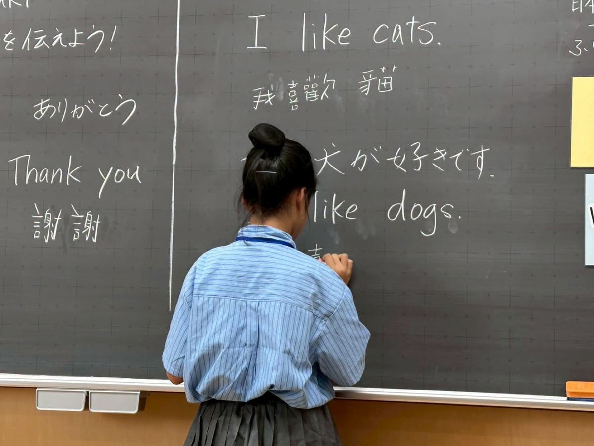
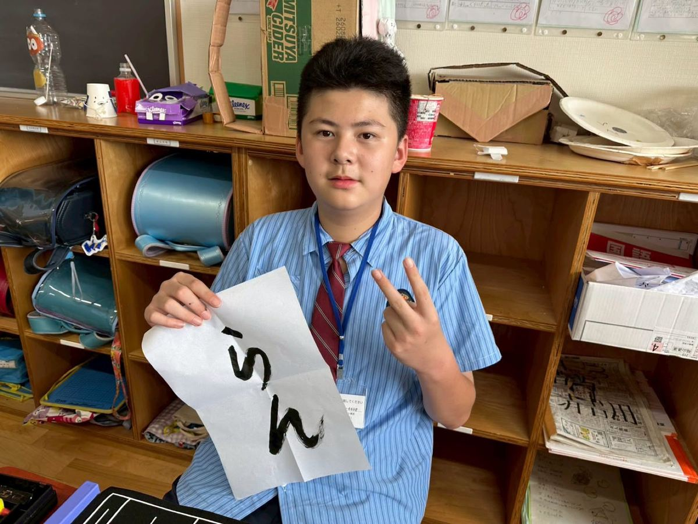
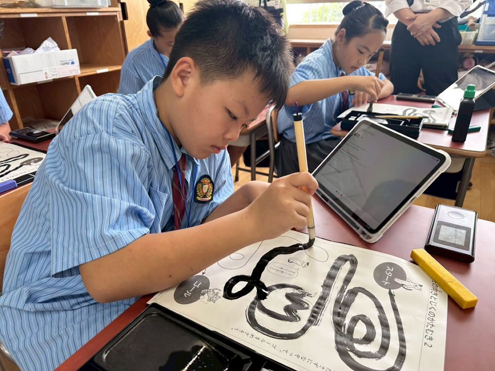

On July 1st and 2nd, teachers and students from Lushang Elementary traveled to Shinozaki Elementary School in Edogawa Ward, Tokyo, for a two-day classroom immersion exchange program.
During the exchange, Lushang students joined six different classes, following the official timetable alongside their Japanese classmates and experiencing the daily rhythm of a Japanese elementary school firsthand.
The two days were packed with variety — students attended lessons together with their Japanese peers and shared school lunches, taking in the atmosphere of Japanese campus life and classroom culture.
“Language is no distance, and exchange has no borders.”
In the classroom, Taiwanese and Japanese students worked together to complete learning tasks, moving from initial shyness to budding friendship. Although they spoke different languages, real-time two-way translation apps helped teachers and students communicate smoothly, letting them share ideas and culture with one another — truly proving that language is no distance, and exchange has no borders.
Whether sweating together in the gymnasium, singing together in music class, creating artwork in art class, trying Japanese shodo calligraphy, or sitting together at lunchtime sharing stories of school life, every lesson and every interaction became a precious and unforgettable international learning experience for the children.
Special thanks to the entire faculty of Shinozaki Elementary School in Edogawa Ward for carefully designing the exchange curriculum and thoughtfully arranging for the students to join their classes, allowing the children to truly immerse themselves in a Japanese school and experience the most authentic educational setting.
Sincere thanks also to the Edogawa Ward Board of Education for its strong support in making this educational exchange possible, and to the Edogawa Chuo Rotary Club for assisting throughout — from reception and coordination to scheduling — offering us the warmest support and care.
Special thanks as well to Chairman Hsieh Wen-hsiang of the Hsieh Yu-lung Education Foundation for supporting our school's international education development and providing valuable resources, giving the children the opportunity to step beyond Taiwan and into the world, broadening their international perspective.
These two days were more than a curriculum exchange — they were an exchange of culture and friendship. The children learned knowledge, experienced culture, and built friendships on a Japanese school campus, letting the world see the confident, brave, and passionate side of Lushang Elementary's students.
We believe this friendship spanning Taiwan and Japan will become one of the children's fondest memories, and we look forward to deepening Taiwan-Japan educational exchange in the future, nurturing a new generation with a truly international outlook.


7月1日、7月2日，路上國小師生前往日本東京都江戶川區立篠崎小學校，展開為期兩天的入班交流學習。
本次交流活動中，路上國小學生進入六個班級，跟隨日本學生的正式課表一起學習，真正體驗日本小學的日常生活。
兩天的課程內容豐富多元，學生們與日本同學一起上課，也一起享用營養午餐，感受日本校園生活與班級文化。
「語言不是距離，交流沒有界線」
在課堂中，臺日學生彼此合作、共同完成學習任務，從一開始的陌生，到逐漸建立友誼。雖然語言不同，但透過即時雙向翻譯軟體的協助，讓師生之間、同學之間都能順利交流，分享彼此的想法與文化，真正做到「語言不是距離，交流沒有界線」。
無論是在體育館裡一起揮灑汗水、在音樂課共同歌唱、藝術課創作作品、書法課體驗日本書道，或是在午餐時間圍坐一起分享校園生活，每一堂課、每一次互動，都成為孩子們珍貴而難忘的國際學習經驗。
特別感謝江戶川區立篠崎小學校全體師長精心規劃交流課程，細心安排學生入班學習，讓孩子們能夠真正融入日本校園，感受最真實的教育現場。
也誠摯感謝東京都江戶川區教育委員會的大力促成與支持，讓此次教育交流得以順利實現。感謝東京江戶川中央扶輪社全程協助交流事宜，從接待、聯繫到活動安排，都給予我們最溫暖的支持與照顧。
更要感謝謝有龍教育基金會謝文祥董事長，支持本校國際教育發展，提供寶貴資源，讓孩子們有機會走出臺灣、走進世界，拓展國際視野。
這兩天，不只是課程交流，更是一場文化交流與友誼交流。孩子們在日本校園中學習知識、體驗文化、建立友誼，也讓世界看見路上國小學生自信、勇敢與熱情的一面。
相信這份跨越臺日的友誼，將成為孩子們心中最美好的回憶，也期待未來持續深化臺日教育交流，共同培育具有國際視野的新世代。
Tap 🔊 to listen · 點喇叭聽發音
Lushang students joined a Japanese classroom for two days.路上國小的學生進入日本教室學習了兩天。
Students tried Japanese calligraphy with brush and ink.學生們用毛筆和墨水嘗試了日本書法。
They followed the same timetable as their Japanese classmates.他們跟隨日本同學同樣的課表上課。
An app helped translate between Chinese and Japanese.一款軟體協助中文和日文之間的翻譯。
A new friendship grew between the Taiwanese and Japanese students.台灣和日本學生之間建立了新的友誼。
Students played sports together in the gymnasium.學生們一起在體育館裡運動。
The students experienced an authentic Japanese school day.學生們體驗了真實的日本校園生活。
The exchange broadened the children's international perspective.這次交流拓展了孩子們的國際視野。
The program let students immerse themselves in Japanese school life.這個計畫讓學生真正融入日本校園生活。
Match the word to its meaning
把英文和中文配對
Matched 配對成功：0 / 9